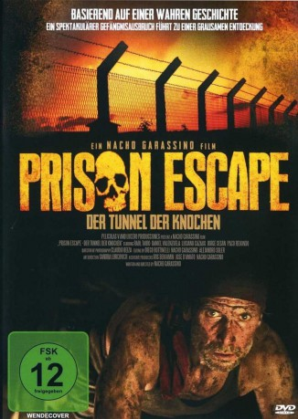

#8694 Prison Escape - Der Tunnel der Knochen
Alternativ: Tunnel of Bones (Englischer Titel)
 
 IMDB-Wertung: 6.1 / 10
IMDB-Wertung: 6.1 / 10  Metascore: 0
Metascore: 0 
Ein Thriller basierend auf einer wahren Begebenheit: Im Dezember 1991 brechen sieben Schwerverbrecher, angeführt von Vulcano (Raúl Taibo) aus einem Hochsicherheitsgefängnis nahe Buenos Aires aus. Sie graben einen Tunnel unterhalb der Gefängnismauern, finden dabei jedoch nicht nur den Weg in die Freiheit, sondern auch zahlreiche menschliche Knochen. Nach reiflicher Überlegung beschließt einer der Flüchtigen, sich telefonisch einem Journalisten anzuvertrauen. Er vermutet, dass es sich bei den verscharrten Toten um politische Häftlinge handelt, die während der Diktatur ermordet wurden. Die Flüchtlinge beschließen einen Pakt mit den Toten, und nehmen sich vor, nach erfolgreicher Flucht die Existenz der Leichen publik zu machen.
Jahr: 2011
Dauer: 100 Minuten
FSK: 12
Land: Argentinien Studio: InfopicturesTonspuren:
Untertitel: Deutsch,
Auflösung: 1080p (1920x832) Größe: 3010 MB
Genre: Action, Thriller, Krimi
Regisseur: Nacho Garassino
Drehbuch: Nacho Garassino
Soundtrack: Alejandro Iglesias Rossi
Darsteller:
- Raúl Taibo als Vulcano
- Germán de Silva als Triple
- Daniel Valenzuela als Toro
- Luciano Cazaux als Correntino
- Jorge Sesán als Periodista
- Paco Redondo als Marciano
- Martín Scarfi als Novio
- Daniel Polo als No Sé
- Eduardo Cutuli als Crespi
- Martin Ortiz als Gutiérrez
- Darío Levy als Medina
- Rubén Noceda als Pantera
- Julio Marticorena als Maestranza
- Hugo Anganuzzi als Sereno del Club
- Nacho Garassino als Amigo Periodista
- Adrián Silver als Enemigo Periodista
- Carlos Berraymundo als Prefecto
- Marcelo Iglesias als Guardia
- Jorge Lázaro als Jefe de Guardia
- Diego Yuk als Preso 1
- Ricardo Ragendorfer als Preso 2
- Richard Wagener als Tumberito
- Jimena Anganuzzi als Chica Dormida
- Laura Migliorisi als Los Ojos
Datei: X:\2011(N-Z)\Prison Escape - Der Tunnel der Knochen (2011, FSK12, 1920x832).mkv seit 25.04.2018
Festplatte: HD 2011(G-Z)
 Es gibt insgesamt 132 Filme in der Gruppe '2011(N-Z)'
Es gibt insgesamt 132 Filme in der Gruppe '2011(N-Z)'